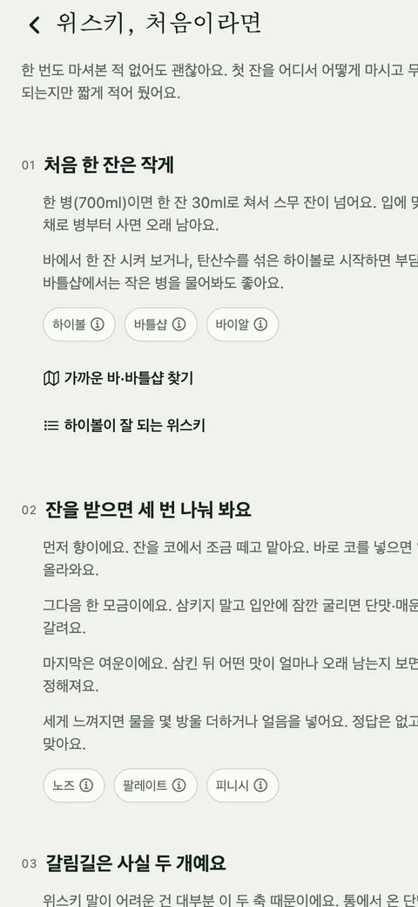

첫잔 [10] — 위스키, 처음이라면: 설명 대신 네 걸음
열흘 전 입문자 피드백을 받고 용어 사전을 35개 만들었습니다. 그런데 사전에는 구멍이 있었습니다. 찾아볼 말을 아는 사람만 찾아볼 수 있다는 것. 처음 온 사람은 무엇을 모르는지 모릅니다. 오늘은 그 사람을 위한 화면을 따로 만들었습니다.
사전과 안내는 다른 물건이다
사전은 찾아보는 것이고, 안내는 순서대로 읽는 것입니다. 9월 13일에 만든 사전은 "셰리밤이 뭐지?" 하는 사람에게는 답이 되지만, "위스키를 마셔 보고 싶은데 뭘 어떻게 해야 하지?" 하는 사람에게는 35개의 낯선 말이 늘어선 목록일 뿐입니다. 그래서 둘을 나눴습니다. 사전은 그대로 두고, 한 번도 안 마셔 본 사람이 첫 잔에서 첫 기록까지 가는 길을 네 걸음으로 적은 화면을 만들었습니다. 이름은 '위스키, 처음이라면'.
| 걸음 | 하는 말 | 끝의 버튼 |
|---|---|---|
| 01 처음 한 잔은 작게 | 700ml 한 병은 30ml 잔으로 스무 잔이 넘는다. 입에 맞을지 모르는 채로 병부터 사면 오래 남는다. 바에서 한 잔, 하이볼, 작은 병부터 | 가까운 바·바틀샵, 하이볼이 잘 되는 위스키 |
| 02 잔을 받으면 세 번 나눠 봐요 | 향, 한 모금, 여운. 코를 바로 넣으면 알코올만 올라온다. 세면 물 몇 방울 | 없음 |
| 03 갈림길은 사실 두 개예요 | 통에서 온 단맛이 얼마나 진한지(셰리), 연기 향이 있는지(피트). 위스키 말이 어려운 건 대부분 이 두 축 때문 | 피트 관문 순서대로, 용어 사전 |
| 04 한 잔 마셨으면 남겨요 | 간단히면 방식·맛 몇 개·점수·한 줄. 80이면 무난한 데일리, 90을 넘으면 인생 보틀 | 위스키 찾아 첫 잔 기록 |
04의 점수 설명은 첫날 정한 구간과 같은 말을 씁니다. 안내 화면에서 80을 "좋음"이라 부르고 기록 화면에서 "무난한 데일리"라 부르면 처음 온 사람은 둘 중 하나가 틀렸다고 생각합니다.

본문에서 용어를 풀지 않는다
이 화면의 규칙 하나는, 낯선 말을 문장 안에서 설명하지 않는다는 것입니다. "셰리 캐스크(셰리 와인을 숙성했던 오크통)에서 온 단맛"처럼 괄호를 열기 시작하면 문장이 길어지고, 문장이 길어지면 처음 온 사람이 먼저 지칩니다. 대신 걸음마다 그 걸음에서 처음 만나는 말을 칩으로 붙이고, 누르면 그 자리에 뜻이 뜹니다. 01에는 하이볼·바틀샵·바이알, 03에는 셰리 캐스크·셰리밤·피트. 읽다가 걸리는 사람만 누르면 됩니다.
내용은 국내 커뮤니티에서 정설로 굳은 것들을 그대로 썼습니다. 입문 3대장, 셰리밤, 피트는 순한 것부터 관문 순서로, 하이볼 국룰. 우리가 새로 발명한 조언은 없습니다. 대신 파는 곳과 가격은 권하지 않고, 확인 안 되는 사실은 적지 않습니다. 안내 화면이라고 규칙이 느슨해지진 않습니다.
처음 세 잔 동안만
이 화면 밖에서도 처음 온 사람이 지나는 자리에 같은 칩을 붙였습니다. 취향 나침반의 문항(마시는 장면 → 니트·온더락·하이볼), 검색의 '종류로 보기'(싱글몰트·블렌디드·버번). 기록 폼의 '마신 방식'과 '어디서 마셨나요'는 칩 이름이 곧 용어라 칩을 겹치지 않고, 대신 한 줄 설명을 답니다. 이 설명은 처음 세 잔 동안만 보입니다. 세 번 기록한 사람은 니트가 뭔지 압니다. 그때도 설명이 붙어 있으면 그건 배려가 아니라 소음입니다.
관측
칩은 사전의 항목 id로 연결됩니다. 사전에서 id 하나를 고치면 그 칩은 오류 없이 조용히 사라집니다. 아무도 모르게 사라지는 종류의 버그라, 걸음마다 어떤 칩이 붙어야 하는지를 테스트로 고정했습니다.
입구는 셋, 예외는 하나
홈의 첫 잔 블록(기록이 0잔인 사람에게 보이는 자리. 취향 나침반에서 "처음 알아가는 중"을 고른 사람에겐 이 줄이 위로 올라갑니다), 설정의 정보 첫 행, 그리고 용어 사전 머리. 온보딩 설문 안에서는 열지 않습니다. 설문 도중에 탭으로 나가면 답이 날아가기 때문입니다.
남긴 규칙
사전은 찾아보는 것, 안내는 순서대로 읽는 것. 본문에서 용어를 풀지 않고 칩으로 붙인다. 도움말은 처음 세 잔 동안만.
모르는 것
처음 온 사람이 이 네 걸음을 끝까지 읽는지 모릅니다. 세 잔이라는 숫자도 감입니다. 한 잔이면 충분한 사람도, 열 잔이 지나도 니트가 낯선 사람도 있을 겁니다. 이 화면은 피드백을 준 입문자 한 사람을 생각하며 만들었고, 두 번째 사람이 뭐라고 할지는 아직 듣지 못했습니다.